Есть только идея
Поможем превратить её в понятное техническое задание, подобрать рецептуру и сырьё.
Из идеи, рецептуры или вашего сырья — в готовую партию под вашим брендом. Капсулируем, фасуем и упаковываем сами.
Берём задачу, разбираемся в деталях и доводим проект до готовой партии. Честно оцениваем сроки и риски, помогаем с рецептурой, сырьём, упаковкой и маркировкой.
С 2023 года мы произвели более миллиона банок. Заказчики продолжают работать с нами, потому что у нас отлаженное производство, обученная команда и простой подход к совместной работе.
Начнём с того места, где вы находитесь, и спокойно разберём следующий шаг.
Поможем превратить её в понятное техническое задание, подобрать рецептуру и сырьё.
Подскажем по упаковке, этикетке, штрихкодам и подготовке данных для маркировки.
Подключимся к регулярным партиям, масштабированию объёма или выпуску нового продукта.
Возьмём конкретную операцию без навязывания лишних услуг.
Вы можете заказать отдельную операцию или полный цикл производства под ключ.
Желатиновые и растительные капсулы размеров 00, 0, 1 и 2. Сырьё заказчика или закупка под задачу.
от 100 банок 02Подробнее →Смешивание рецептур и фасовка порошков в потребительскую упаковку с контролем веса.
до 15 000 пакетов/суткиФасовка чайного сырья и растительных смесей. Минимальная партия — от 10 кг.
гибкие партииБанки, пакеты, запайка, этикетирование, нанесение даты, штрихкода и групповая упаковка.
готово к отгрузкеРаботаем по вашей рецептуре или помогаем сформировать техническое задание и подобрать компоненты.
под вашу задачуСопровождаем создание карточки товара в «Честном ЗНАКе» и подготовку данных для маркировки.
GTIN · упаковка · агрегация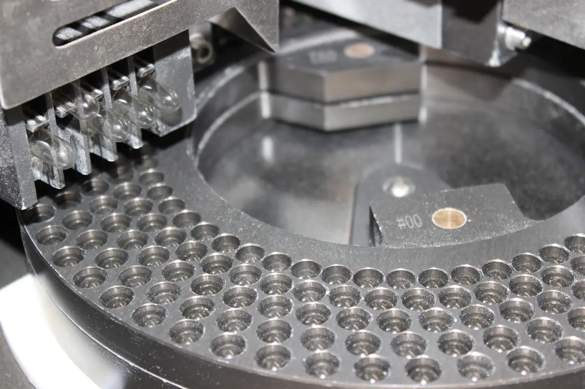
01 / подготовкаУ каждой банки есть история до того, как она появляется на полке.
Шум оборудования. Контроль веса. Ровная этикетка. Проверенная партия. Именно из этих незаметных деталей и складывается продукт, за который не стыдно.
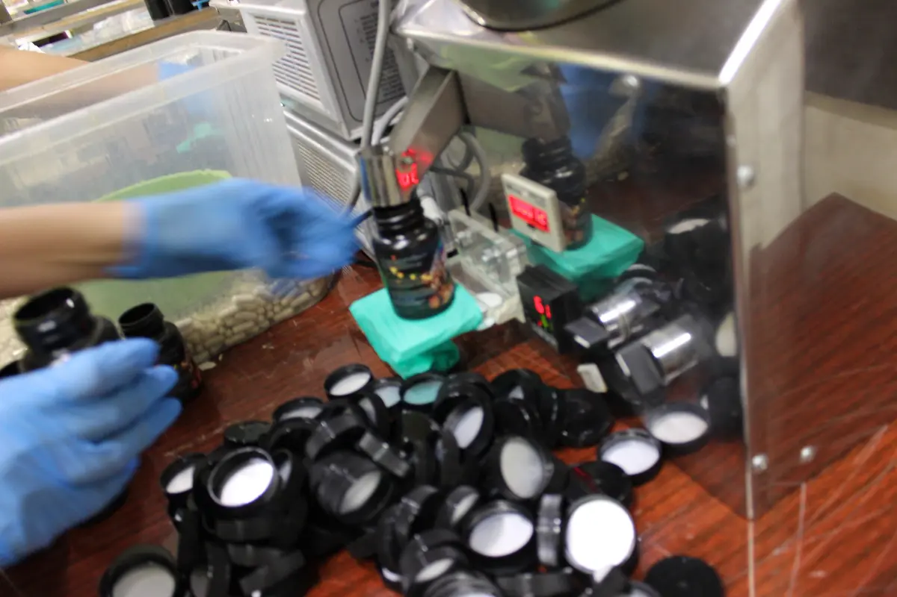
02 / контрольОборудование, люди и готовая продукция — всё снято на нашем заводе.
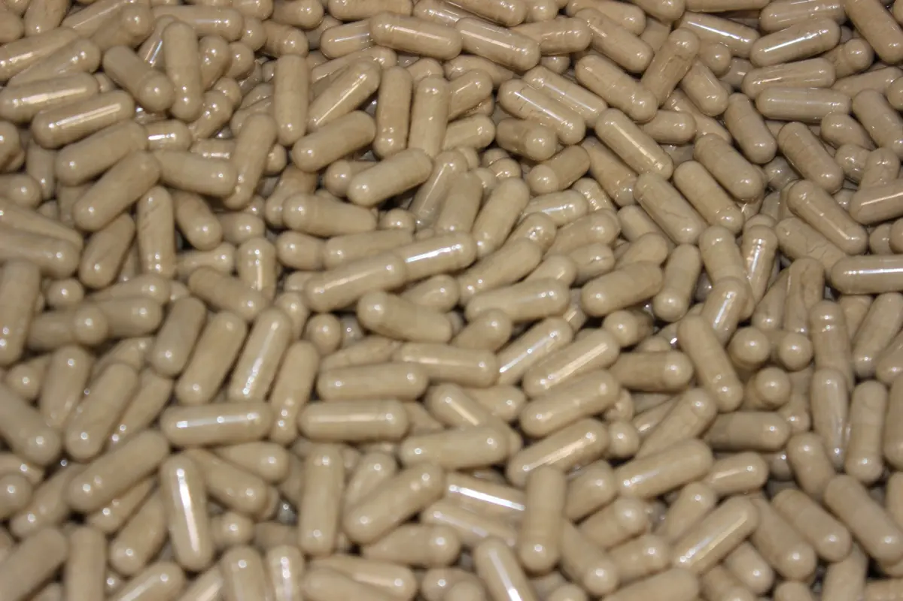
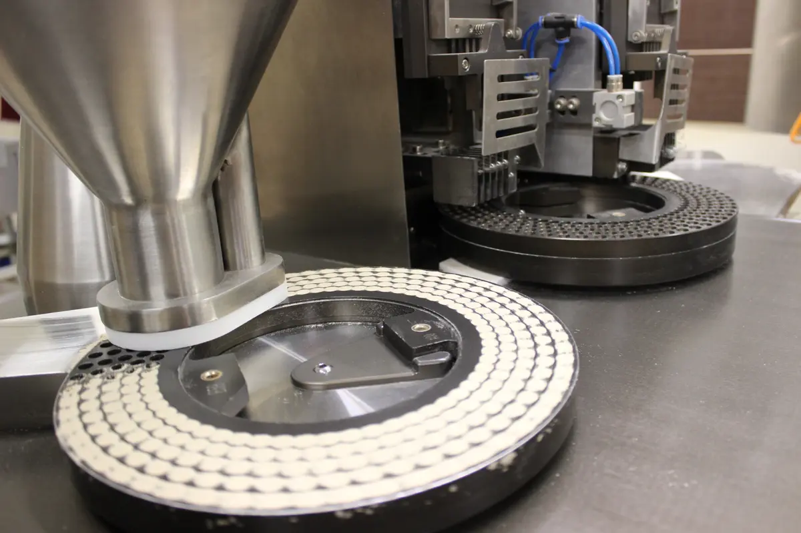
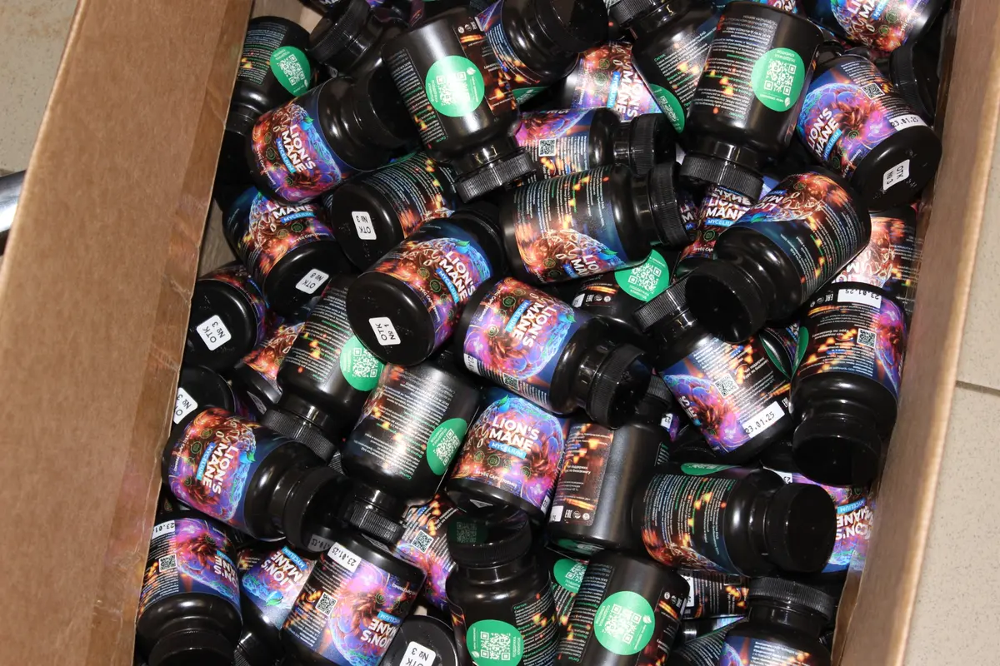
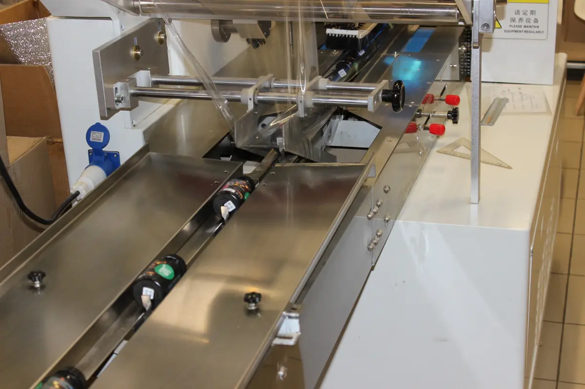
Масштабируем производство вместе с вашим спросом.
Разные формулы и тиражи, единый подход к производству и упаковке.
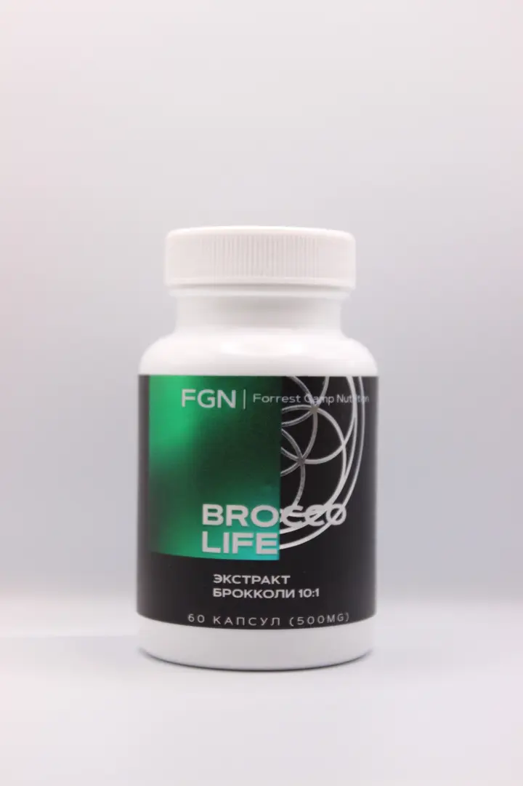
60 капсул · 500 мг
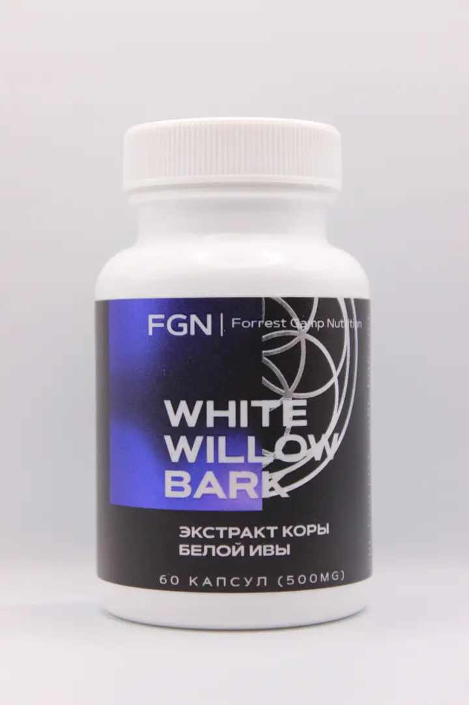
60 капсул · 500 мг
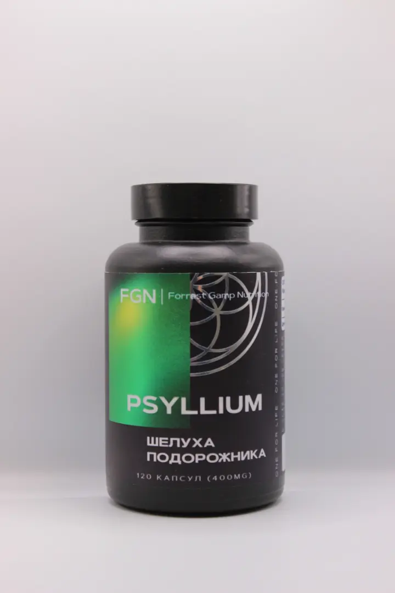
120 капсул · 400 мг
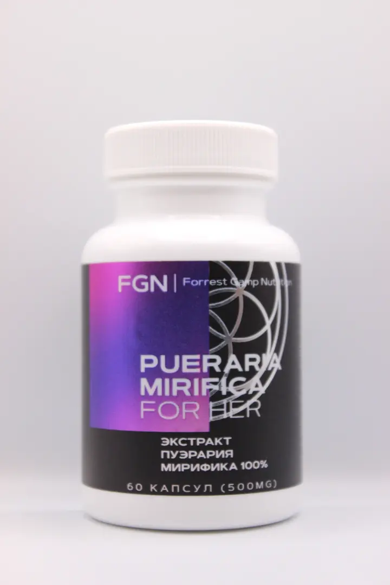
60 капсул · 500 мг
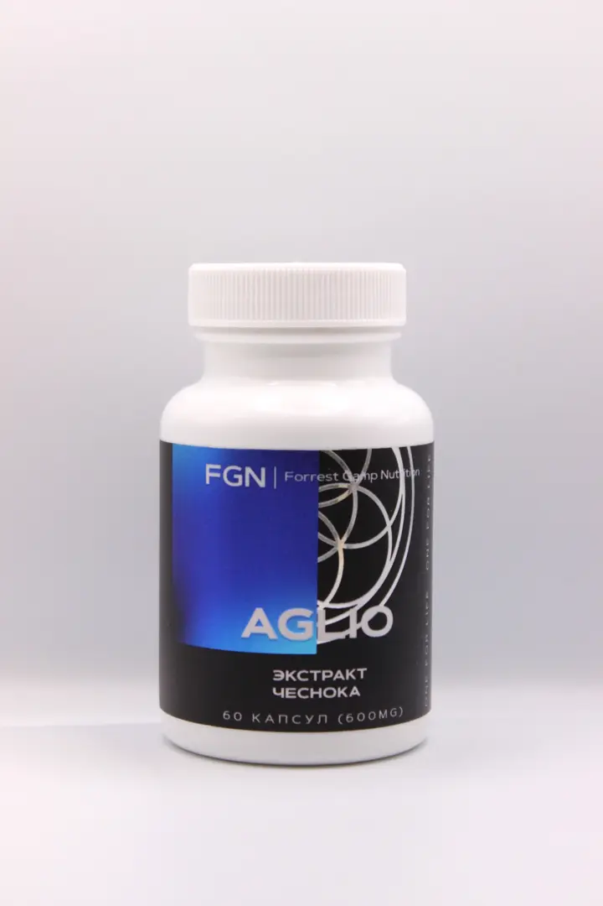
60 капсул · 600 мг
Продукт, состав, объём, упаковка и желаемые сроки.
Уточняем сырьё и операции, готовим расчёт.
Проверяем внешний вид и параметры упаковки.
Запускаем согласованную партию в работу.
Готовим к отгрузке и сопровождаем документы.
На заводе действует программа производственного контроля. Сырьё и готовая продукция проходят последовательные зоны, сотрудники работают по правилам личной гигиены и санитарной обработки.
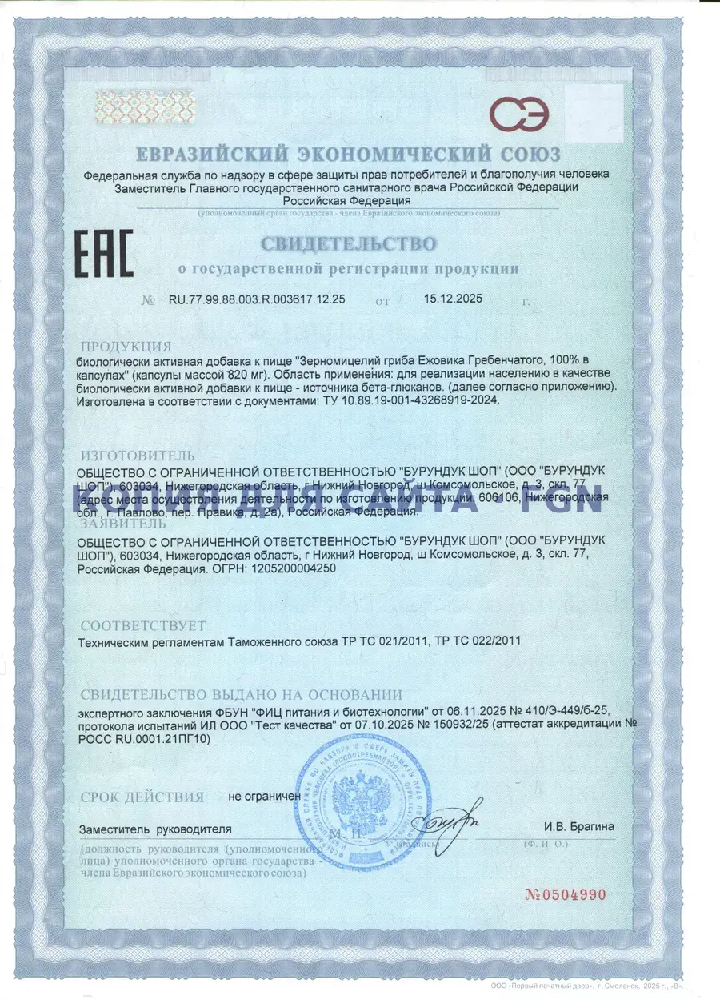
КОПИЯ ДЛЯ САЙТА№ RU.77.99.88.003.R.003617.12.25
Выдано 15.12.2025 · срок действия не ограничен
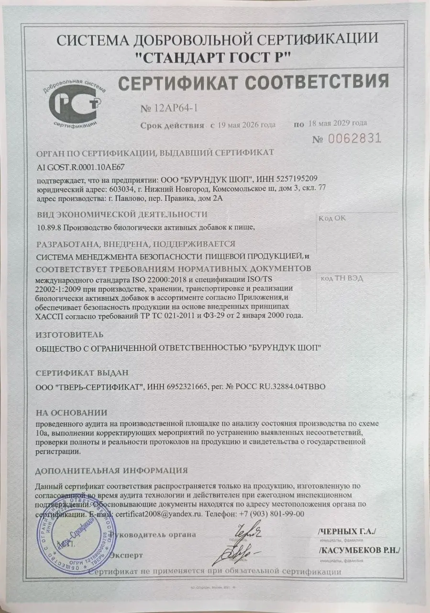
КОПИЯ ДЛЯ САЙТАДобровольный сертификат № 12AP64-1
Действует с 19.05.2026 по 18.05.2029
Достаточно основных вводных. Мы уточним детали и подготовим предварительный расчёт.